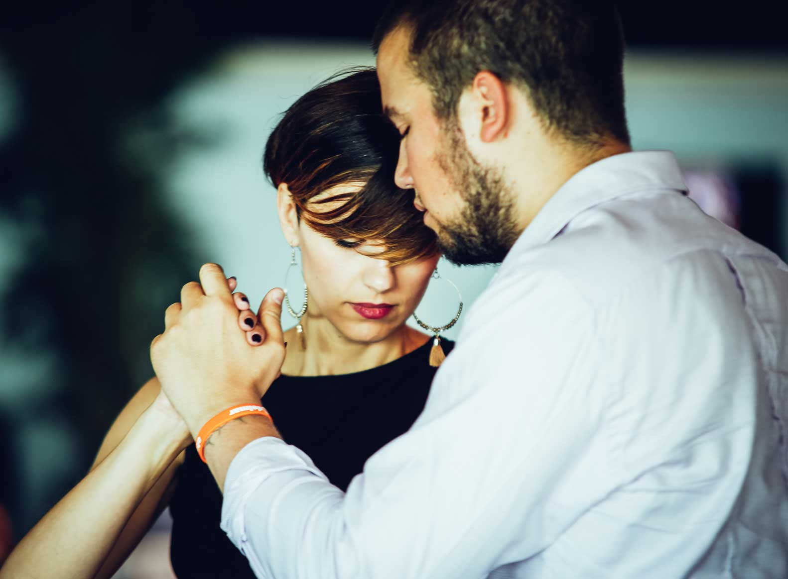
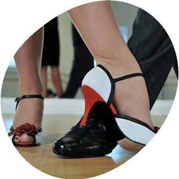
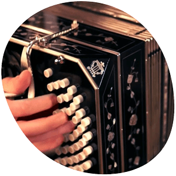
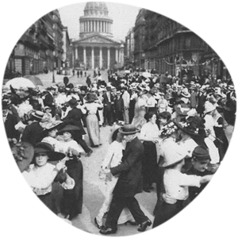

Le tango argentin est l'une des danses de couple les plus sophistiquées que vous puissiez apprendre. Que vous aimiez danser la salsa, les danses de salon, le lindy hop, le swing américain, la bachata ou le merengue… Danser le tango s'adresse à tous et à tous les âges.
Tango = danse sociale!
Le tango est une danse sociale. Comme pour la salsa et le lindy hop, la scène du tango propose des soirées dansantes. En d'autres termes, vous pouvez «sortir» pour danser lors des soirées de tango, que l'ont appellent milongas. Des gens de partout se réunissent pour pratiquer la danse, pour se parler, partager un verre,…
À Bruxelles (et dans d'autres villes), vous pouvez sortir et danser tous les soirs de la semaine. Tout cela dans une atmosphère détendue et accueillante.

Tango = improvisation
Dans le tango argentin, chaque pas est possible, il n'y a donc ni tort ni raison. Vous pouvez même être créatif et inventer vos propres pas et figures!

Avez-vous besoin d'un partenaire de danse?
Oui! Il faut être à deux pour danser le tango! Et si vous n'avez pas de partenaire de danse? Aucun problème! Nous vous aiderons à trouver quelqu'un pour rejoindre nos cours de danse!
A BE-TANGO, nous visons à équilibrer le nombre de « leaders » et « followers » dans nos classes. En conséquence, tout le monde a la chance de danser avec un partenaire pendant toute la durée des cours de tango.
Bon à savoir sur le tango!
Voyager avec le tango
Toutes les grandes villes ont leurs propres soirées et festivals de tango. En conséquence, vous pourrez enrichir vos vacances – ou vos voyages d'affaires – d'une soirée dansante.
L'aspect social du tango
Le tango est une danse internationale, dansée dans le monde entier. En d'autres termes, c'est l'outil parfait pour se connecter avec des gens de partout et de tous âges.
- Un aperçu des événements à Bruxelles et les environs.
- Un aperçu de nos événements internationaux préférés et des milongas locales.
- Quelle est la différence entre le tango argentin et la danse de salon?
Comparer le tango à...
Plusieurs fois, nous recevons la question; « Vous ne dansez que le tango?«
La réponse est simple: non, … le tango argentin consiste en une variété de styles. Ainsi, le type de style de tango dépend de la musique de tango.

Par conséquent, maîtriser ces différents styles de tango – et les fusions de cette danse qui continuent d'évoluer – est pourquoi nous croyons que nous avons besoin plus qu'une vie pour maîtriser la danse du tango argentin.
Enseignons-nous & dansons-nous que le tango?
Nous enseignons le tango, la valse et la milonga
On danse aussi ... la milonga
La musique de la milonga est plus rapide, rythmée et a un rythme fortement accentué. Les danseurs évitent de faire une pause en dansant. Par conséquent, ils utilisent les mêmes éléments de base du tango, en évitant les éléments complexes. Ils dansent avec un fort accent sur le rythme.
Milonga est une danse rapide et rythmée, définie par ses pas simples et sa musicalité amusante. C'est pourquoi, nous l'appelons la salsa ou même le rock and roll du tango argentin.
On danse aussi ... la valse
L'une des caractéristiques de danser la valse est l'absence de pauses. Pour clarifier, c'est une danse circulaire non-stop. Le mouvement fluide et détendu est la façon dont les danseurs de tango dansent les vals. Parce qu'ils veulent une certaine variété, les tours (giro's) sont parfois implémentés.
La valse est, comme la valse viennoise, une danse circulaire qu'on danse en continu au rythme 1-2-3.
Prenez le plaisir des rencontres avec d'autres danseurs
Alors maintenant tu sais. Quand on danse le tango argentin, on ne danse pas seulement le tango… mais on danse aussi la valse et la milonga.
C'est vraiment amusant! Vous pouvez même danser le tango sur de la musique non-tango (pop-music) si vous le souhaitez! Découvrez les différents styles de tango existants.

Prêt à commencer votre voyage tango?
Rejoignez nos cours de tango à Bruxelles et Woluwe.
Réservez un essai gratuit